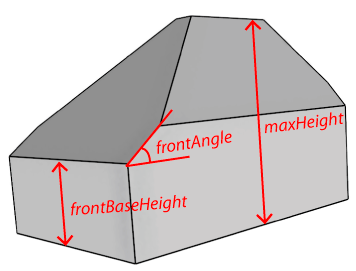
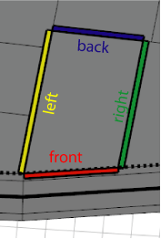
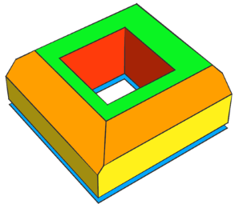
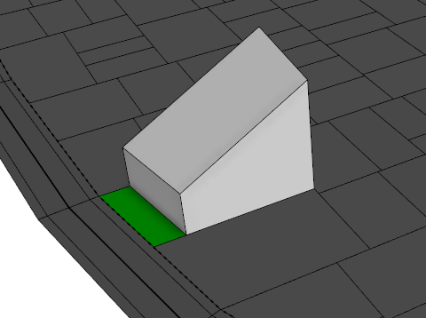

envelope operation
direction selector { normal | world.up } Direction along which the envelope is errected.
maxHeight float Maximum height of the envelope in meters. If this height is reached, the volume is cut and sealed horizontally.
frontBaseHeight, backBaseHeight, sideBaseHeight, rightBaseHeight, leftBaseHeight float Base height of the corresponding side in meters.
frontAngle, backAngle, sideAngle, rightAngle, leftAngle float Slope angle of the corresponding side in degrees.
baseHeights float[] Base heights, one value per edge.
angles float[] Slope angles, one value per edge.
Creates a building envelope above each face of the current shape's geometry. Each edge of the face is classified according to the street.front, street.back, street.right, street.left, street.side selectors. Sides with the according baseHeights are then built perpendicular to the face. Finally, sloped planes are added at the top of each side, with the according slope angle.
Evaluation of the street.xxx selectors is based on the streetWidth attribute, see Auto-generated street width attributes. If the attribute is not available, component selection falls back to the object.xxx selectors.
Per edge control
One version of envelope allows baseHeights and angles to be specified per edge via arrays. The arrays must be in face-edge order, i.e. the first element is for the first edge of the first face, the second element is for the second edge of the first face, and so on. Shared edges are considered separately for each face. If an array does not contain enough elements, default values are used: 0 for base heights and 90 degrees for angles.
This allows, for example, the following call:
envelope(direction, maxHeight, frontBaseHeight, frontAngle, backBaseHeight, backAngle)
to be written as:
envelope(direction, maxHeight,
comp(fe) { street.front = frontBaseHeight | street.back = backBaseHeight },
comp(fe) { street.front = frontAngle | street.back = backAngle | all = 90 })


Component tags

The operation automatically applies semantic component tags to the resulting face components:
| "envelope.bottom" | Blue: original face. |
| "envelope.side.base" | Yellow: vertical base faces. |
| "envelope.side.slope" | Orange: sloped faces. |
| "envelope.side.inner" | Red: side faces from holes. |
| "envelope.top" | Green: top face at max height. |
For more information on working with component tags, refer to:
Related
Examples
Street-facing Slope

Lot -->
setback(10) { street.front : color(0,1,0) FrontYard
| remainder : Building }
Building -->
envelope(normal, 50, 15, 30)
The example code above creates a building envelope with a slope of 30 degrees facing the street-side. Eave height is 15 meters. Before creating the envelope, a front yard of 10 meters is split from the lot using the setback operation in conjunction with the street.front selector.